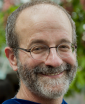

|  | 204 Paige Hall, Tufts University, Medford MA 02155 david.hammer@tufts.edu; 617-627-2396. I’m a professor at Tufts, in the departments of Education and Physics & Astronomy. Right now I'm chair of Education, and as of this fall, 2018, I am the director of the Institute for Research on Learning and Instruction. My research is on learning and teaching in STEM fields (mostly physics) across ages from young children through adults. Much of my focus has been on intuitive "epistemologies," how instructors interpret and respond to student thinking, and resource-based models of knowledge and reasoning. This is a list of my publications, with links to some files. If you’re interested and not sure where to start, one good place might be Case Studies of Children’s Inquiries, and another might be Student Resources for Learning Introductory Physics. |
News! We are searching for a professor in computer science or engineering education to hold the McDonnell Family Bridge Professorship. Here is the description on Interfolio.
Projects:
That search is part of our launching IRLI, to support research on learning and instruction at Tufts, and for that we owe great thanks to the James S. McDonnell Family Foundation. The Listening Project is ramping up in its second year, focused on science faculty recoginizing and engaging with students' thinking. Students Doing Science continues through spring 2019, studying the dynamics of learners' engagement and persistence, and Novel Engineering continues well past its NSF funding, integrating engineering and literacy in elementary education.
Recent Papers:
Phillips, A.M., Watkins, J., & Hammer, D. (2018). Beyond “Asking questions:” Problematizing as a disciplinary activity.Journal of Research in Science Teaching. Link to article.
Hammer, D., Gouvea, J.S., & Watkins, J. (2018). Idiosyncratic cases and hopes for general validity: What education research might learn from ecology. Infancia y Aprendizaje. Link to article
Hill, C. F. C., Gouvea, J. S., & Hammer, D. (2018). TA attention and responsiveness to student reasoning in written work. CBE-Life Sciences Education. Link to article
Jaber, L., Dini, V., & Danahy, E. (2018). Targeting disciplinary practices online with a responsive teaching approach. Science Education. Link to article
Watkins, J., McCormick, M., Wendell, K., Spencer, K., Portsmore, M., & Hammer, D. (2018). Data-based conjectures for supporting responsive teaching in engineering design with elementary teachers. Science Education. Link to article
Hammer, D. (2018). The interacting dynamics of epistemology and conceptual understanding. In T. Amin & O. Levrini (Eds.), Converging Perspectives on Conceptual Change: Mapping an Emerging Paradigm in the Learning Sciences. (pp.245-252). New York: Routledge. Preprint.